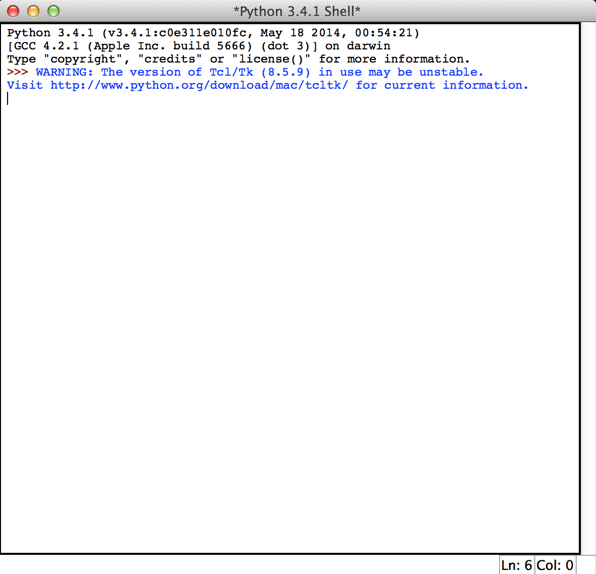
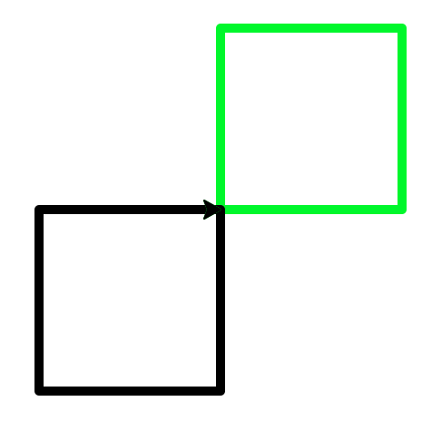

Getting to know you
Table of Contents
1 Introduction
Python Turtle
- Python is a highly popular programming language, used by many large organisations.
- Facebook, NASA, IBM, Google and Yahoo among others all use it extensively.
- It is considered by many to be one of the easiest languages to pick up.
Let's get started
- Load up the Python Development, called IDLE.
- You'll be presented with the Python Shell window, which looks like this…

- With the mouse in the shell window, type the following at the >>> Prompt.
- Hit enter after each line.
- (Note: Make sure you write Screen with a capital letter!
import turtle
wn=turtle.Screen()
wn.bgcolor("lightgreen")
wn.title("Turtle Power")
- A graphics window (currently empty) will appear that we can draw into.
- We've called our screen object, "wn". Every time we want Python to control somthing to do with this window, we'll need to put wn. in front of the command.
- We also changed the background colour, and put a title on the window.
- Let's add a "turtle" to the screen. We can move this arounnd the screen to draw shapes and patterns. We'll call our turtle, "Tess".
tess=turtle.Turtle()
tess.color("hotpink")
tess.pensize(5)
tess.shape("turtle")
- When we created a tess object, we then went on to set some of her properties - colour, thickness of the lines she'll draw and how she appears on the screen.
- Incidentally, a full colour list can be found here.
- We could add other turtle objects too, if we wanted, and have several drawing shapes on the screen. We might have a look at that later on.
- Next, lets start to draw. Type…
tess.forward(100) tess.left(90) tess.forward(100) tess.left(90) tess.forward(100) tess.left(90) tess.forward(100) tess.left(90)
- Your turtle should have traced a square shape for you.
2 A note on colours
Learn It
- Although we can use colour names, we have much more control if we use numbers to describe the colours we want.
- Computers mix Red, Green and Blue to form a colour.
- Each of the three colours can have values from 0 up to 255.
- So white is 255,255,255 and black is 0,0,0.
- If we wanted pink, we'd mix red and blue together - 255,0,255 for instance.
Code It
- First we need to set the colour mode for the program
wn.colormode(255)
- Now we can set colors using RGB values.
tess.color(255,0,255)
- If you want to use different colours, have a play with the widgit below to see what they'd look like.
3 Your turn
Try it
- Tip: You can move the turtle back to the centre, and clear the screen at any time by using the commands…
tess.home() tess.clear()
- Draw a red triangle,
- Draw a pentagon, where each side is a different colour,
- Create second turtle on the screen, and call it tom. Have this draw a black square, and the other turtle draw a green square, so that they look like this…

- Next, we'll look at ways of creating shapes more efficiently.